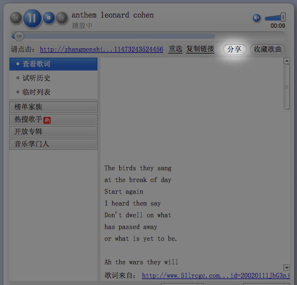
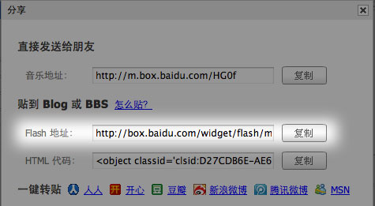
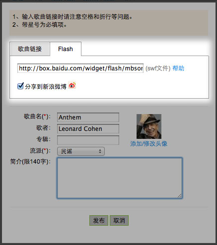
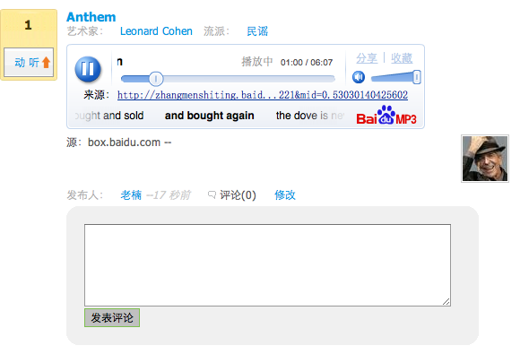

下面以百度mp3播放器为例说明，别的大同小异，你这么聪明，一定能搞定的。
1、首先，要到百度mp3去，这个，呃，不用我提供网址了吧？非要我提供，我也写一下，说不准多少年后百度倒下了呢，那时候的人不知道什么是百度也有可能 http://mp3.baidu.com.查找你想要找的歌曲。
2、找到歌曲之后，点击那个三角形的播放按钮，看见木有？
3、在随后弹出的百度音乐盒里，点击那个分享，请住，当他的链接有劳什子http://zhangmenshiting.baidu.com/data/music/xxxx这种形式时，这个链接复制下来是没用的，只有当这个链接是类似http://www.abcd.com/abcd.mp3这样的，才可以直接复制下来。好了，不跑题，点击分享，如下：
4、在随后弹出的对话框里复制flash播放器地址。
5、得到这个地址后，点击动听FM里的那个醒目得要死的“我要发布”按钮，粘贴到flash链接里去,记住，这种情况下，只能粘到flash那个选项卡的链接里，前面那个“歌曲链接”选项卡，是为了类似于http://www.abcd.com/abcd.mp3这样的链接用的。再补充很少的信息后，就可以发布了。
6、看下，成功了，虽然百度这个播放器丑了点，凑合吧，动听就行，不求好看了。
7、总结下，除了百度，很多音乐站点像什么酷狗啊，虾米啊，甚至土豆优酷视频也都可以找到类似的分享，粘上来就好了，记住一点，只要复制一个flash文件链接就好了，不要那种一大堆html代码的。